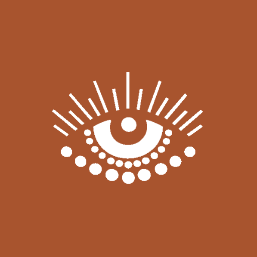
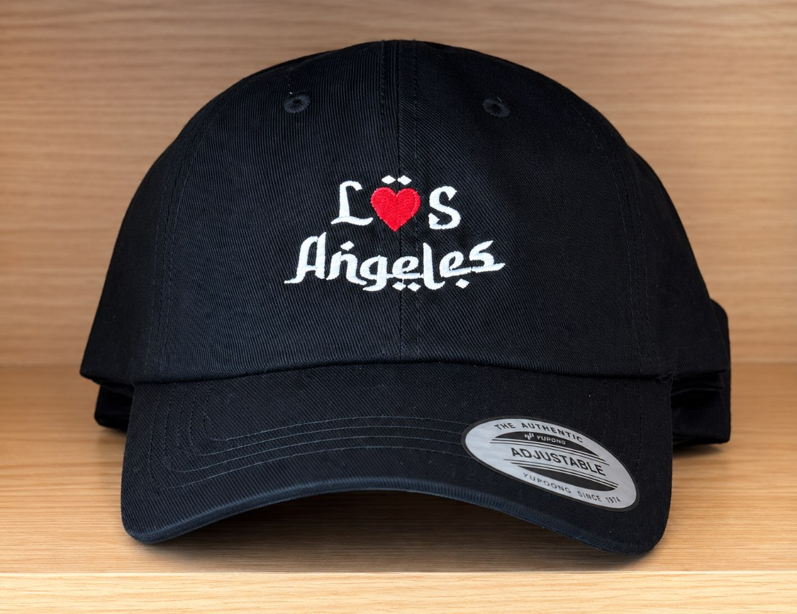
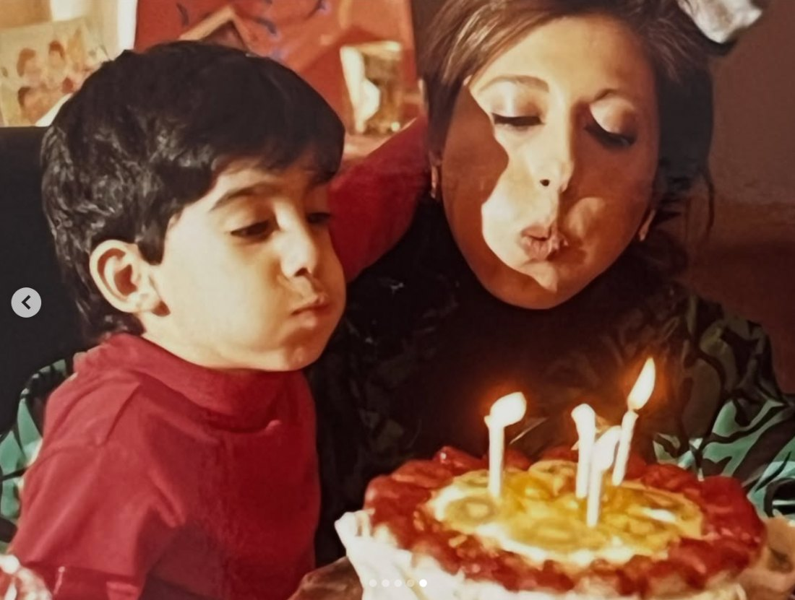

CASPIAN COAST
Coffee & Culture
Brand Book
the essentials

Our mark is the nazar — the Persian eye for protection, care and welcome.


Keep clear space around the mark equal to the height of the pupil. Don't recolor the iris, stretch, rotate, or add effects.

Our custom blackletter — a Persian-inspired Californian typeface that blends Tehrangeles street culture, Venice mural lettering, and traditional Farsi forms into a distinctly Los Angeles visual language.
Used for statements, merch, and our L♥S Angeles postcard. One of a kind, like the café.
Warm earth and saffron sun, grounded by ink and cream.
Sun-warmed and real — the mural, the spices, the cups, the coast.


Caspian Gothic typography, carried out into the world.


The brand begins at a kitchen table. The warmth of family, the ache of a homeland left behind, and the small keepsakes that travelled west — these shape how everything looks and feels. Faded film tones, taped snapshots, hand-lettering and the nazar are our way of remembering out loud.



That familial ethos is the throughline: warm cream and clay over cold white, Cormorant's soft italics for the things we'd say gently, the eye that watches over every guest. We designed to capture the ethos of being welcomed into our home.
From the Caspian to the coast.
از ساحل خزر تا اقیانوس آرام